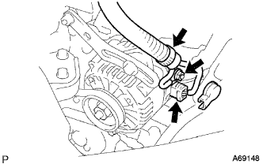
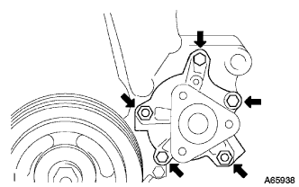

Water pump ASSY removal |
| 1. The engine Anda cover RH is removed |
Remove two bolts and two screws.
Remove the nut and remove the engine undercover RH.
| 2. Cooling solution (Toyota genuine super LLC) extract |
Open the radiator kayatsu.
Loosen the radiator drain kotsu plug and extract the cooling solution.
| 3. Remove the cylinder head cover No.2 |
 |
Remove the four nuts and remove the cylinder head cover No.2.
| 4. Fan & alternator V belt removed |
 |
Loosen the adjustment bolt A and the fixing bolt B.
Loosen the tension of the V belt and remove the V belt.
| 5. Alternator ASSY removes |
|  |
Take off the terminal cap.
Separate the connector and harness clamp.
Remove the nut and remove the B terminal terminal.
 |
Remove the bolt A and nuts and remove the fan belt agasting bar.
 |
Remove the fixed bolt B and remove the alternator.
| 6. Remove the engine mounting insulator SUB-ASSY RH |
 |
Supporting the engine with a jack via a piece of wood.
 |
Remove the 5 bolts and nuts and remove the engine mounting insulator RH.
| 7. Remove the water pump pulley |
Use SST to fix the water pumpuri.
 |
Remove the three bolts and remove the water pumpuri.
| 8. Water pump ASSY removes |
|  |
Remove 3 bolts and two nuts and remove the water pump ASSY.